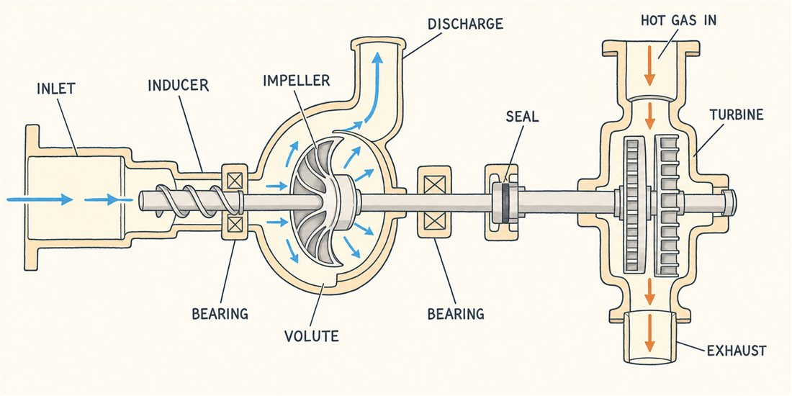

心臓部、毎分4万回転
いよいよ、あなたのホームグラウンドです。第4話の「サイクル」が回し方の知恵なら、今回は回される本体。スペースシャトルの燃料ターボポンプは、毎分37,000回転を超えて回り、約77,000馬力——機関車百両分の動力を、洗濯機ほどの機械が出していました。H3のLE-9も、燃料ターボポンプは毎分約41,000回転。液体ロケットの技術的な心臓部がここだと言われるゆえんです。
中身は、ひとつの軸に役者が一列に並んだ構成です。図の各部をタップしてみてください。

なぜそこまで回すのか。ポンプの仕事（揚程）は羽根の周速で決まるので、速く回せば回すほど、同じ仕事を小さく軽い羽根車でこなせるからです。飛ばすものは1グラムでも軽くしたい。だからロケットのポンプは、地上のポンプの常識を桁で超えた回転数に踏み込みます。
ただし高速回転には天敵がいます。速く回るほど吸込側では流れが加速して圧力が下がり、液体が沸騰して気泡が生まれる——キャビテーションです。下の順にタップしてみてください。
よりみち吸込みの貯金 — NPSHとタンク加圧
ポンプ入口の圧力（速度ヘッド込みの全圧で数えます）が蒸気圧 pv までどれだけ余裕があるか——この「沸騰までの貯金」が有効吸込みヘッド（NPSH）です。貯金が足りなければキャビテーションで即破産。だからロケットはタンクをわざわざヘリウム等で加圧して貯金（NPSHa）を積み増します。いっぽうインデューサの仕事は貯金を増やすことではなく、「必要な貯金額（要求NPSH）」を引き下げること——少ない残高でも羽根車が暮らせるようにする係です。ちなみに液体水素は密度が小さく、同じ圧力上昇にケタ違いの揚程が要るため、燃料側ポンプは高回転・多段になりがちです（極低温流体では、蒸発にともなう冷却がキャビテーションを和らげる熱力学効果も効いてきます）。
よりみち数字で見る怪物 — シャトルHPFTP
| 項目 | 値 |
|---|---|
| 回転数 | 37,000 rpm 超 |
| 出力 | 約 77,000 馬力 |
| 昇圧 | 約 1.2 MPa → 41 MPa 超 |
| 構成 | 3段遠心ポンプ + 2段タービン |
液体水素を34倍の圧力に押し上げる3段の遠心ポンプを、2段のタービンが直結で回します。二段燃焼サイクル（第4話）の「高圧地獄」を支えるのがこの怪物で、シャトル計画では最も手を焼いた部品のひとつでした。軸受・シール・翼振動——回転機械の難所が全部、極端な条件で押し寄せます。
🌀流体屋のためのノート
ターボポンプはあなたの知識がいちばん直通する部品です。無次元整理もそのまま通用します——回転数の上限を縛るのは吸込比速度（キャビテーション）とチップ速度（強度）。インデューサは、限られたキャビテーションを許容しながら昇圧し、気泡の過大成長や不安定化（旋回キャビテーション）を抑えて主羽根車に有害な気泡を渡さない——そんなぎりぎりの設計をする世界で、ゆるい迎え角の螺旋翼・長いコード・少ない翼数という独特の形はそのためです。そしてもうひとつ——ポンプは推進系の振動に参加します。吸込配管の液柱と気泡・構造のたわみがバネ＝質量系を作り、推力変動と結合して自励振動を起こすことがある。名前をPOGOといいます。第8話でこの怪談をやりましょう。
・G. P. Sutton & O. Biblarz, Rocket Propulsion Elements, 9th ed., ch.10
・NASA KSC SSME 教材・SSME Orientation（HPFTP: 37,000rpm超・約77,000hp・吐出6,000psi超）
・JAXA LE-9 諸元（燃料ターボポンプ 約41,000rpm・酸化剤 約17,000rpm）
・断面図は生成イラスト（構成はSutton ch.10の標準配置に基づき検証済み）